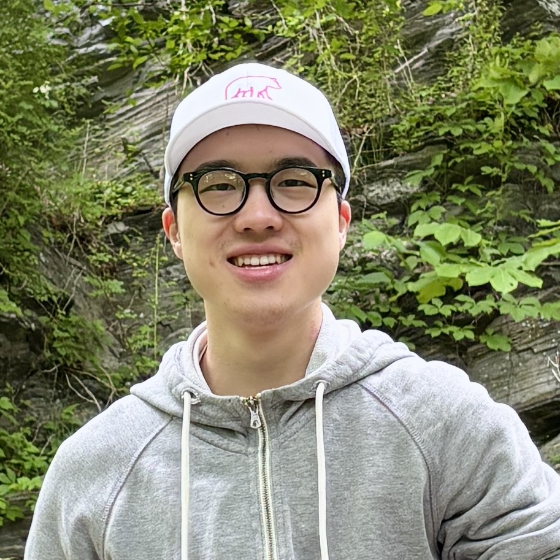

Qile Jiang
PhD Candidate in Applied Mathematics, Brown University
I work on scientific machine learning and AI for science: collaborative multi-agent LLM systems that automate scientific discovery, evolutionary search with LLM agents, and neural operators for physical systems.
News
- Jan 2027 Short oral at CHR 2027, Manchester, on graph analysis of 4,898 American catalog-house plans, 1907–1960.
- Nov 2026 New preprint: SwarmEvolve: Latent Agent Swarms for Evolutionary Discovery and Optimization.
- Nov 2026 Talk at SIAM MDS26, Salt Lake City: AgenticSciML, in the minisymposium Agentic AI for Scientific Discovery and Computing.
- 2026 AgenticSciML published in npj Artificial Intelligence; Complex Valued DeepONet published in the Journal of Computational Physics.
- May 2026 Passed PhD qualifying examinations.
Publications
Citation counts from Google Scholar, November 2026.
Preprint
-
SwarmEvolve: Latent Agent Swarms for Evolutionary Discovery and Optimization
Q. Jiang, G. E. Karniadakis. arXiv:2611.08483, 2026.
Journal articles
-
AgenticSciML: Collaborative Multi-Agent Systems for Emergent Discovery in Scientific Machine Learning
Q. Jiang, G. E. Karniadakis. npj Artificial Intelligence, 2026. Cited by 12. -
Complex Valued Deep Operator Network (DeepONet) for Three Dimensional Maxwell’s Equations
Q. Jiang, M. Salvadori, D. Ota, V. Shankar, K. Shukla. Journal of Computational Physics, 2026. Cited by 8. -
DeepSeek vs. ChatGPT vs. Claude: A Comparative Study for Scientific Computing and Scientific Machine Learning Tasks
Q. Jiang, Z. Gao, G. E. Karniadakis. Theoretical and Applied Mechanics Letters, 2025. Cited by 108. -
Modeling Characteristics of Neuronal Firing in the Thalamocortical Network of Connections in Control and Parkinsonian Primates
C. Ferrell, Q. Jiang, M. O. Leu, T. Wichmann, M. Caiola. Journal of Computational Neuroscience, 2025. Cited by 2.
Conference paper
-
Private Rooms, Shared Routes: Graph Analysis of 4,898 American Catalog-House Plans, 1907–1960
Q. Jiang. Computational Humanities Research Conference (CHR 2027), Manchester, UK, January 2027. Short oral; to appear in the Anthology of Computers and the Humanities.
Talks
- Nov 2026 AgenticSciML: How to Build Collaborative Multi-Agent Systems for Emergent Discovery in Scientific Machine Learning. SIAM MDS26, Salt Lake City, UT.
- Sep 2026 Building and Analyzing Collaborative Multi-Agents for Emergent Discovery in Scientific Machine Learning. SciML@ND26, University of Notre Dame, IN.
- May 2026 Automated Research in Scientific Computing with LLMs and Collaborative Multi-Agent Systems. ICERM Workshop on Agentic Scientific Computing and SciML, Brown University.
- Jan 2026 AgenticSciML: Collaborative Multi-Agent Systems for Emergent Discovery in Scientific ML. Pacific Northwest National Laboratory, invited seminar. Recording
- Aug 2022 Mathematical Modeling of the Onset of Parkinson’s Disease in the Primate Brain. Undergraduate Summer Research Symposium, Brown University.
Education
-
Brown University — PhD in Applied Mathematics, 2024 – May 2029 (expected)
Advisor: George Em Karniadakis. Passed qualifying examinations, May 2026. - Brown University — MSc in Data-Enabled Computational Engineering and Science, 2024 – 2025
-
Brown University — BSc in Applied Mathematics (Honors) and Art History, 2020 – 2024
Honors thesis: parameter identifiability in PDEs from noisy data, using perturbation theory.
Experience
-
Graduate Research Assistant, CRUNCH Group, Brown — Sep 2024 – present
Agentic AI for science (DARPA-funded); neural surrogates for semiconductor physics with First Solar, 1000× speed-up over numerical PDE solvers; data-efficient SciML for Maxwell’s equations with HyPerComp. -
Developer Relations Engineer, Contextual AI — Jun – Aug 2025
Built the first instruction-following MCP search system over 6,000+ servers, beating ChatGPT-4o on complex tool-selection queries; launched the open-source MCP Reranker. -
NSF REU Researcher, Cornell University — Jun – Jul 2023
Wave equations, edge detection, neural networks, and operator learning. Mentor: Alex Townsend. -
NSF REU Researcher, Emory University — Jun – Jul 2022
Computational neuroscience; dynamical system model of parkinsonian firing patterns. Mentors: Mike Caiola and Thomas Wichmann.
Teaching
Teaching Assistant, Brown University: APMA 1170 Introduction to Computational Linear Algebra (Fall 2026); APMA 2070 Deep Learning for Scientists and Engineers (Spring 2026); APMA 1941 Asymptotic Methods in Differential Equations (Spring 2024); APMA 0360 Applied Partial Differential Equations (Fall 2023); MATH 1110 Ordinary Differential Equations / Dynamical Systems (Fall 2022–23).
Peer review
Journal of Computational Physics (2025–26, 2 reviews); Archives of Computational Methods in Engineering (2026); Advances in Continuous and Discrete Models (2025).
Honors & awards
Jerome L. Stein Memorial Award of Excellence, Brown (2024); Undergraduate Honors in Applied Mathematics, Brown (2024); NSF REU, Cornell (2023) and Emory (2022).
Competitions
Kaggle Silver Medal, RSNA Knee Abnormality Detection, 83/6,299 (2026); Kaggle Silver Medal, Kaggriculture, 175/10,148 (2026).
Writing
- 2025 Context Engineering for Your MCP Client, Contextual AI Blog.
- — Medium — occasional notes on SciML and AI agents.
Programming: Python, MATLAB, Julia, R, Java, SQL, LaTeX. Languages: English (fluent), Mandarin Chinese (native).